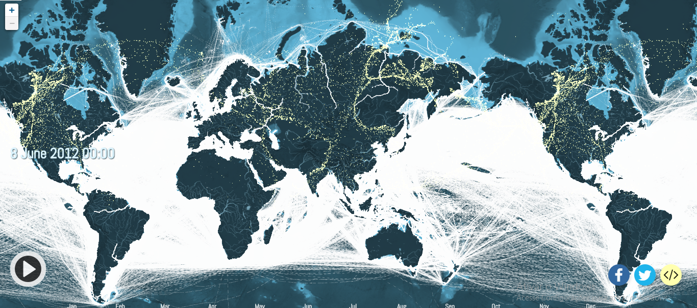
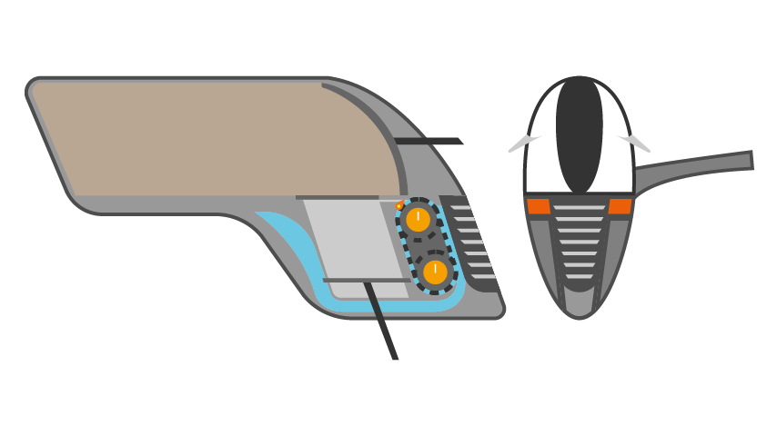

Cafeína Team
Cafeína has received the following awards and nominations. Way to go!
Best Use of Hardware
The solution that exemplifies the most innovative use of hardware.
Ocean Ride
Ocean Ride is here to remove marine microplastic with creative, simple, inexpensive solutions that already take advantage of existing resources.

Ocean Ride Model 1
Side view of Ocean Ride
Ocean Ride Model 2
Perspective view of Ocean Ride
1st What is the Ocean Ride ?
Ocean Ride is a microplastic collection system that works differently than others. In this project we have two main products: first use as a dockable object on any boat and in addition be a fixed platform strategically positioned in the areas of sea currents that is where has the largest flow of these materials.
The system will use the Van Der Graff generator principle to attract micro plastic through an electrostatic current and store this debris inside a container.
2nd Applicability and Feasibility:
FACILITY: First we will use thousands of existing vessels that make trips around the entire maritime territory, docking our collection system to take advantage of the sea routes and use them to our advantage and helping to clean up the ocean. Moreover, on fixed platforms we will take advantage of the sea currents that converge to a strategic place that throws the waste towards the positioning of our platform.
Figure 1: Sea lanes
ECONOMIC FEASIBILITY: The economic viability will make companies embrace our solution, while enabling sustainability and cleanliness of the ocean, will provide additional profit for ship companies. In addition, NASA will have a low cost to implement.
COMPANY IMAGE: The company will be associated with a sustainable image, and consequently will generate a competitive differential that will help in the formation of new business, besides being able to achieve a stronger partnership with the clients interested in this image.
3rd Solution
Van Der Graff's generator principle is the heart of the project, and it is responsible for all the attraction of microplastics across a specific field to attract only that plastic. The device works similar to a magnet. In addition, there is a conveyor belt that, when it comes into contact with the Van Der Graff generator orb, will be electrified and attract our debris, but in order not only to guarantee the electrostatic charge on the conveyor belts, a blade mechanism with a maximum hole size of 5mm. will be inserted into the treadmill.
Right after the process of attracting the microplastic, we will store this waste, compacting it to optimize as much space as possible.
After the maximum storage capacity, this waste will be removed at the destination of the vessel or if it is the fixed platform there will be a vessel responsible only for changing containers, removing the full and replacing it for a void.

Figure 2: Device on the outside
Figure 3: Device inside
REFERENCES
- OLIVATTO, Glaucia et al. Microplásticos: Contaminantes de Preocupação Global no Antropoceno. Microplásticos, [S. l.], p. 22, 4 nov. 2018.
- GOVERNAMENTAL (EUA). PODAAC. Ocean Currents & Circulation. Measurements, [S. l.], n. 1, p. 1, 1 jun. 2018. available in: https://podaac.jpl.nasa.gov/ OceanCurrentsCirculation. Acesso em: 19 out. 2019.
- PRIVADA (Brasil). Sabrae. Sustentabilidade. Sustentabilidade , [S. l.], n. 1, p. 1, 27 jul. 2018. available in: http://sustentabilidade.sebrae.com.br/ sites/Sustentabilidade. Acesso em: 19 out. 2019.
- GOVERNAMENTAL (Brasil). Pegada Ecológica. Pegada ecológica. Sustentabilidade , [S. l.], n. 1, p. 1, 26 out. 2018. available in: http://www.pegadaecologica.org.br/ 2015/index.php. Acesso em: 19 out. 2019.
- GOVERNAMENTAL (EUA). Spaceappschallenge. Trash Cleanup. Trash Cleanup, [S. l.], n. 1, p. 1, 1 out. 2019. available in: https://2019.spaceappschallenge.org/ challenges/earths-oceans/trash-cleanup/details. Acesso em: 19 out. 2019.
- GOVERNAMENTAL (EUA). PODAAC. Ocean Currents & Circulation. Mesurements, [S. l.], n. 1, p. 1, 1 out. 2019. available in: https://podaac.jpl.nasa.gov/ OceanCurrentsCirculation. Acesso em: 19 out. 2019.
- GOVERNAMENTAL (EUA). PODAAC. NASA and NOAA Altimetric and Ocean Surface Topography Data Information. Intro, [S. l.], n. 1, p. 1, 1 out. 2019. available in: https://podaac.jpl.nasa.gov/ Altimetric_Data_Information. Acesso em: 19 out. 2019.
- GOVERNAMENTAL (EUA). NASA. Scatterometry. MEASURING OCEAN WINDS FROM SPACE, [S. l.], n. 1, p. 1, 1 out. 2019. available in: https://winds.jpl.nasa.gov/ aboutscatterometry/history/. Acesso em: 19 out. 2019.
- GOVERNAMENTAL (EUA). NASA. Ocean Color Feature. Eddies in the Strait of Hormuz, [S. l.], n. 1, p. 1, 1 out. 2019. available in: https://oceancolor.gsfc.nasa.gov/. Acesso em: 19 out. 2019.